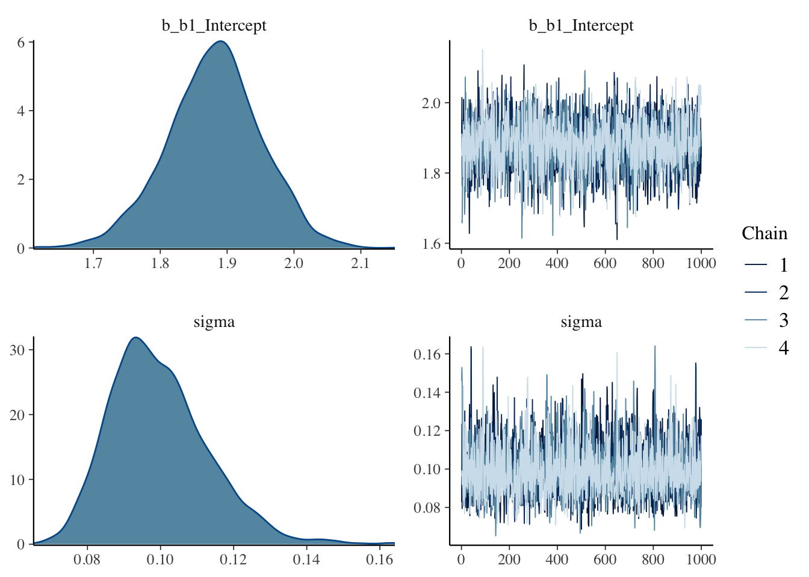
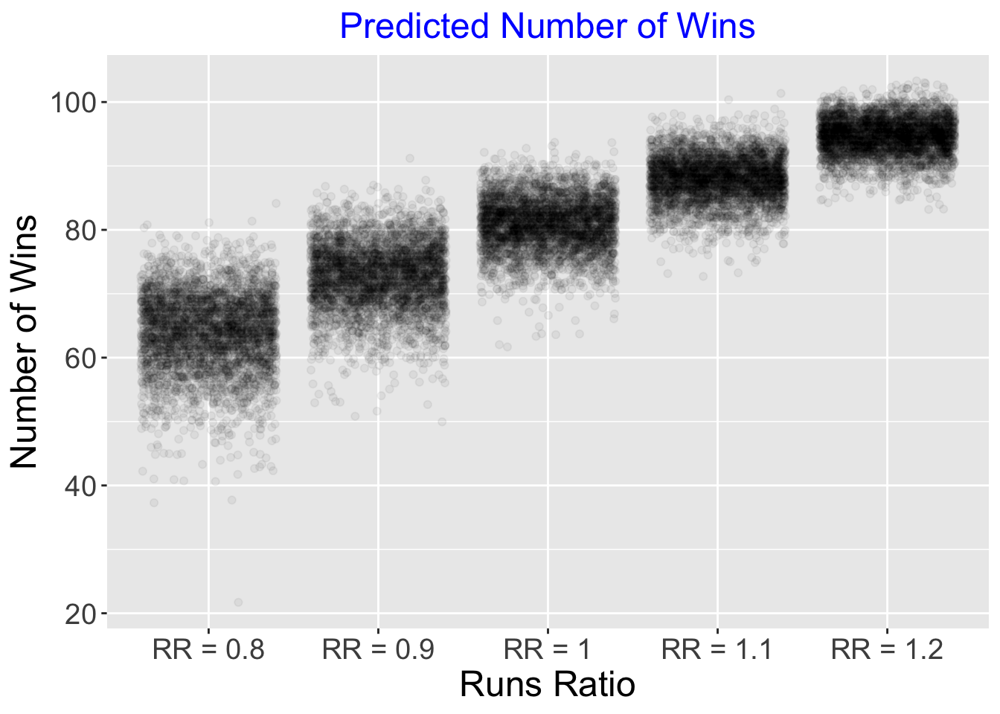

Chapter 2 Binomial Modeling
2.2 Example
Suppose a sample of \(n = 20\) college students are asked if they plan on wearing masks while attending class. Let \(p\) denote the proportion of all students who plan on wearing masks.
2.3 Prior on proportion
Suppose you believe that \(p = 0.40\) and you are 90 percent sure that \(p < 0.60\).
Use beta.select() from the ProbBayes package to find the shape parameters of the matching beta curve prior.
## [1] 4.31 6.30A beta(4.31, 6.30) prior represents one’s beliefs about the proportion \(p\).
2.4 Prior on the logit parameter
Since we will writing a model in terms of the logit function \[ \theta = \log \left(\frac{p}{1-p}\right) \]
We want to find a corresponding normal prior on \(\theta\).
A simple way of doing this is by simulation …
- Simulate 1000 draws from the beta prior on \(p\).
- Compute \(\theta\) on these simulated draws of \(p\).
- Find the sample mean and standard deviation of these draws – those will be estimates of the mean and standard deviation of the normal prior on \(\theta\).
set.seed(123)
p_sim <- rbeta(1000, 4.31, 6.30)
theta_sim <- log(p_sim / (1 - p_sim))
c(mean(theta_sim), sd(theta_sim))## [1] -0.4000904 0.6540093The corresponding prior on the logit parameter \(\theta\) is assumed to be normal with mean \(-0.400\) and standard deviation \(0.654\).
2.5 Fitting the model
The model is \(y_1, ..., y_{20}\) are a random sample from a Bernoulli distribution with probability \(p\) where \(p\) has the logistic representation.
\[ \log \left(\frac{p}{1-p}\right) = \theta \]
where \(\theta \sim N(-0.400, 0.654)\).
We put the twenty binary responses in a data frame.
We use the brm() function from the brms package to fit the model.
fit <- brm(data = bdata,
family = bernoulli,
y ~ 0 + Intercept,
prior = c(prior(normal(-0.400, 0.654),
coef = Intercept)),
iter = 1000,
refresh = 0)## Compiling the C++ model## Start samplingThe plot() function will display a density plot and a trace plot of the intercept \(\theta\).

The summary() function provides summary statistics for \(\theta\).
## Family: bernoulli
## Links: mu = logit
## Formula: y ~ 0 + Intercept
## Data: bdata (Number of observations: 20)
## Samples: 4 chains, each with iter = 1000; warmup = 500; thin = 1;
## total post-warmup samples = 2000
##
## Population-Level Effects:
## Estimate Est.Error l-95% CI u-95% CI Rhat Bulk_ESS Tail_ESS
## Intercept -0.57 0.40 -1.35 0.18 1.00 716 964
##
## Samples were drawn using sampling(NUTS). For each parameter, Bulk_ESS
## and Tail_ESS are effective sample size measures, and Rhat is the potential
## scale reduction factor on split chains (at convergence, Rhat = 1).The posterior_samples() function will display the simulated draws of \(\theta\).
## b_Intercept lp__
## 1 -0.8260905 -13.75085
## 2 -0.7806164 -13.67096
## 3 -0.5037451 -13.48638
## 4 -0.5057878 -13.48580
## 5 -0.7425805 -13.61470
## 6 -0.2717489 -13.745272.6 Inferences about the proportion
To obtain a sample of draws from the posterior distribution on \(p\), one can use the inverse logit transformation on the simulated draws of \(\theta\).
\[ p = \frac{\exp(\theta)}{1 + \exp(\theta)} \]
The posterior density for \(p\) is found by constructing a density plot of the simulated draws of \(p\).

A 90% posterior interval estimate is found by selecting particular quantiles from the simulated values of \(p\).
## 5% 95%
## 0.2250251 0.5214453